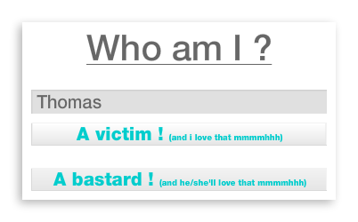
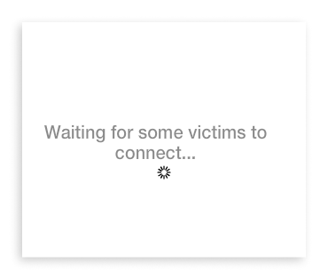
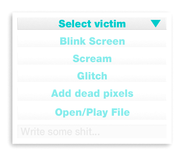
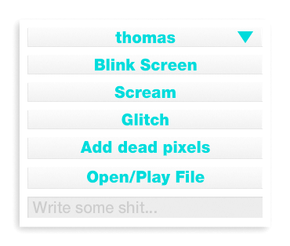
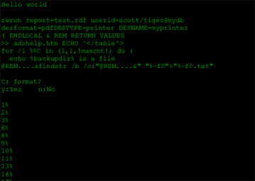

Step 1 :
Download the AIR application.
If the downloaded file's extension is .ZIP, rename it to .AIR.
Step 3 :
Configure it as a victim after giving it a name to find it later :

The application will automatically restart preconfigured as a victim each time the computer is rebooted.
After installing it, think about removing the application from the startup menu and all other traces (trash, desktop, etc...) to make it more discrete !
Step 4 :
Install the application on your desktop and connect as a bastard.
It will wait for victims connected to the local network

The application can only detect users inside the same local network!
Step 5 :
You'll be notified when a new victim connects and then be able to do some shit distantly on his/her computer.
Select your victim in the combobox to enable the actions :


And enjoy driving your friend crazy \o/
Options explaination :
Blink : Makes the victim's screen flashing shortly.
Scream : Plays a screaming sound.
Glitch : Displays some glitches for a short amount of time.
Dead pixels : Adds 4 dead pixels in the victim's screen. Creatives will love this one :]
Open/play file : Select a video file (readable by flash!) that will be played full screen till its end. Or an image that will be displayed subliminally. Or a sound file played in background. Or even a flash SWF file.
Upload is slow, take it easy with the file sizes !
Input : here you can write anything. It will be displayd as command line style in the distant computer. Like that:
You can write those special commands in there :
/cmd : writes some meaningless shit
/ask : writes "y:yes n:no". If the victim's too dumb he/she can write an answer
/progress : Writes random progression percents
/clear : Erases all the shits you wrote
/reset Removes the victim mode
/url xxx : open a link in the victim's browser
Scenario suggestion :
- Put some dead pixels.
- Launch some glitches/flashes.
- Open that page once or twice.
- Make it scream and continue glitching/flashing.
- Add some dead pixels.
- Play some fart sounds randomly.
- Eventually put some subliminal images.
- Open a corporate website with associated nice sounds.
- Write /cmd then /clear.
- Write format D: then /ask then /progress no matter his/her possible answer.
- Write any shit you want, do a remake of matrix, whatever... it's not my business!
- Play a nice video fullscreen
- ...blink, glitch, scream, youporn, glitch, dead pixels, scream, scream, blink, etc...
- Enjoy \o/
{kind=link}
{kind=link}
{kind=link}
Infos :
- Works only in a local network.
- Automatically restarts with the computer if configured as a victim.
- To self cancel the victim mode, you have to remove that folder on windows :
C:\Users\[USER NAME]\AppData\Roaming\com.whoiam.Whoiam\Local Store\#SharedObjects
No idea about MAC's location. - Click on the traybar icon to bring the app to front (right click to close)
- MAC version cannot hide from dock, which is shit. Will have to try to fix that someday :(...
- You don't have admin rights to install it? A bundled version is (probably) comming!
- A beta Android application exists to control a user from its back. Like a bastard yup! Not tested on other devices than Galaxy Nexus and Galaxy Tab. Sizes can be fucked up depending on resolutions.
- Sources on GitHub (+ list of bugs to fix and some enhancement ideas)